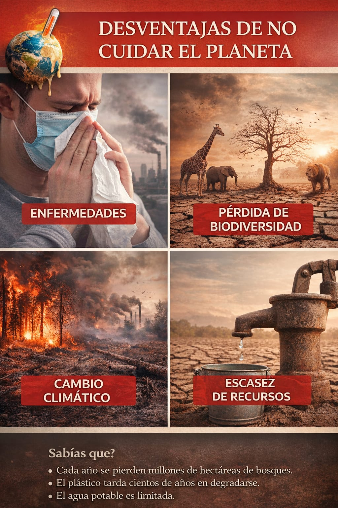

.jpg)
DESVENTAJAS
Una de las principales desventajas es el aumento de enfermedades, debido a la contaminación del aire y del agua.
También se produce la pérdida de biodiversidad, ya que muchos animales y plantas desaparecen por la destrucción de su hábitat.
Otra desventaja es el cambio climático, que provoca fenómenos naturales más intensos como sequías, inundaciones y huracanes.
Además, se genera escasez de recursos naturales, como el agua potable y los alimentos.
El cuidado del planeta es esencial para la supervivencia de las especies y el equilibrio de los ecosistemas, ayudando a combatir la contaminación, la deforestación y la pérdida de biodiversidad. Aunque los beneficios a largo plazo son innegables, existen ciertos retos o "desventajas" asociados a la transición hacia estilos de vida más ecológicos.
Cuidar el planeta no requiere grandes esfuerzos económicos, sino un cambio de conciencia en las acciones diarias. Acciones esenciales para el cuidado del planetaPara contrarrestar los problemas ambientales como la contaminación y el cambio climático, se recomiendan acciones cotidianas accesibles:

Desventajas y Retos del Cuidado del Planeta
Costos económicos iniciales: Adquirir productos ecológicos, paneles solares o vehículos eléctricos suele ser más caro que las alternativas tradicionales, lo que representa una barrera económica para muchos.
Mayor inversión de tiempo y esfuerzo: Separar residuos, compostar, cultivar huertos propios o buscar alternativas reutilizables requiere cambios de hábito y un mayor compromiso de tiempo diario.
Inconveniencia y cambio de estilo de vida: Reducir el consumo de productos desechables (como bolsas o envases) implica un ajuste en la comodidad diaria y la forma de compra.
Limitaciones de infraestructura: En muchas regiones, la falta de sistemas eficientes de reciclaje o transporte público dificulta las acciones individuales de sostenibilidad.
Impacto económico en sectores tradicionales: La transición ecológica puede afectar empleos en industrias de alto impacto, como los combustibles fósiles, requiriendo una reestructuración laboral.
.jpg)
Mantenimiento y diseño: Algunos productos o edificaciones sostenibles pueden requerir un mantenimiento más especializado o presentar limitaciones en su diseño original.
.jpg)
Aunque los beneficios superan los costos, estas son las principales dificultades al implementar medidas ecológicas:
Costos iniciales elevados: La adopción de tecnologías verdes suele requerir una inversión inicial significativamente más alta que las opciones convencionales. Esto ocurre en:
Viviendas: Las casas ecológicas tienen un coste de construcción superior.
.jpg)
Empresas: Implementar modelos de economía circular o sistemas de reciclaje industrial implica gastos importantes de infraestructura.
.jpg)
cualidades para el cuidado del planeta
Para contrarrestar los problemas ambientales como la contaminación y el cambio climático, se recomiendan acciones cotidianas accesibles:
.jpg)
Gestión de residuos:
Aplicar la regla de las 3R: Reducir, Reutilizar y Reciclar.
Separar la basura en orgánica, vidrio, cartón y plásticos para facilitar su tratamiento.
Evitar el uso de plásticos de un solo uso, como botellas y bolsas, que tardan cientos de años en degradarse.
Movilidad y consumo:
Optar por el transporte público, la bicicleta o caminar para reducir emisiones de CO2.
Evitar el consumismo excesivo, especialmente en la industria textil, que genera una enorme huella ambiental.
Pérdida masiva de biodiversidad y extinción de especies.
Escasez de agua potable y desertificación de suelos fértiles.
Aumento de enfermedades respiratorias y cardiovasculares debido a la mala calidad del aire.
Información Importante sobre el Cuidado del Planeta
A pesar de estos retos, el cuidado del medio ambiente es crucial para evitar consecuencias graves.
Amenazas actuales: La falta de cuidado provoca contaminación del aire y agua, calentamiento global (cambio climático), deforestación y pérdida de hábitats.
.jpg)
Consecuencias de la inacción: La inacción conlleva riesgos de salud (enfermedades respiratorias, dengue) y desastres naturales como inundaciones o sequías.
.jpg)
Acciones clave: Acciones pequeñas como reciclar, reducir el uso de plástico, plantar árboles, ahorrar energía y agua, y separar basura orgánica de inorgánica generan un gran impacto positivo.
.jpg)
Beneficios a largo plazo: El cuidado ambiental sostenible permite preservar los recursos naturales para futuras generaciones, asegurar aire fresco y agua limpia, y proteger la biodiversidad.

| MENU | ANTERIOR | SIGUIENTE | INICIO |